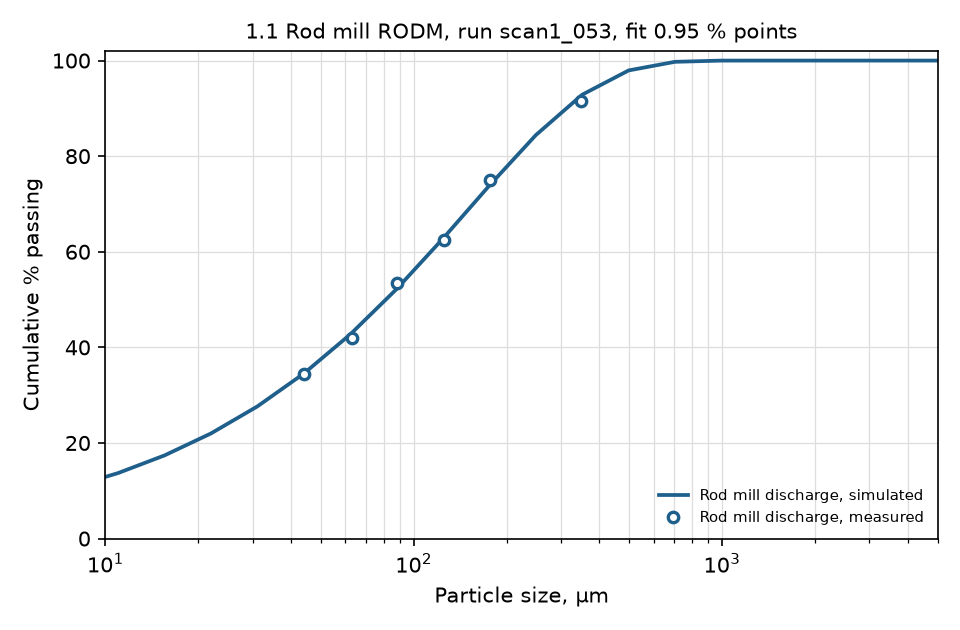
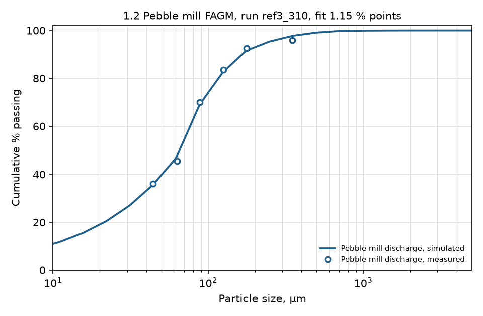
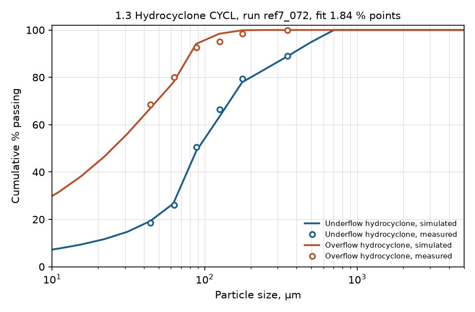
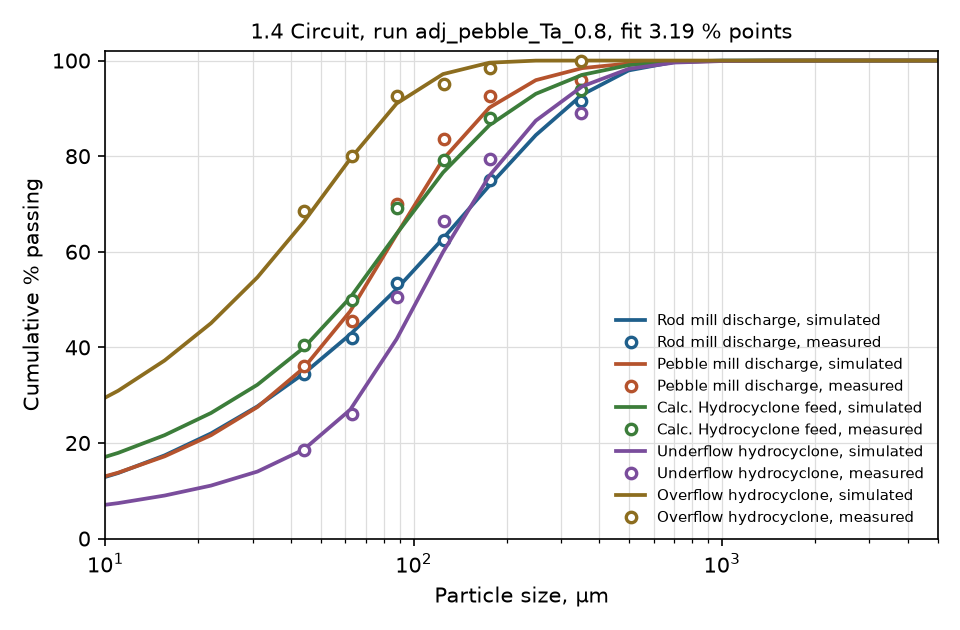

Assignment 2: the calibration runs, ranked
Every engine run of the rod mill, the pebble mill, the cyclone and the whole circuit, ranked by a written score, with what each parameter does. Malla ran them with MODSIM's own engine outside the GUI; the chosen design still has to be run in the GUI for the report's figures, and the choices and the report stay the group's (course rule 0.8).




Rod mill RODM: the calibration runs, best first
The 15 best of 300 runs, ranked by the score: root mean square of simulated minus measured cumulative % passing of the rod mill discharge at the six sieves. Each run is a whole engine simulation of the unit on its measured feed; the outlined settings differ from the best run.
| Run | Settings played | Impacts | |||||||
|---|---|---|---|---|---|---|---|---|---|
| S1 at 1 mm, 1/min | α | Λ | Residence time, min | Size curve fit, % points | d80, µm | Hold-up, t | Score | Verdict | |
| 1scan1_053 | 0.5 | 0.65 | 2.513 | 4.7 | 0.95 | 215 | 3.02 | 0.95 | Best: used in the circuit |
| 2ref1_062 | 0.5 | 0.65 | 2.513 | 4.7 | 0.95 | 215 | 3.02 | 0.95 | |
| 3ref1_061 | 0.5 | 0.65 | 2.2617 | 4.7 | 0.95 | 215 | 3.02 | 0.95 | |
| 4ref1_063 | 0.5 | 0.65 | 2.81456 | 4.7 | 0.95 | 215 | 3.02 | 0.95 | |
| 5ref1_064 | 0.5 | 0.65 | 3.14125 | 4.7 | 0.95 | 216 | 3.02 | 0.95 | |
| 6ref1_060 | 0.5 | 0.65 | 2.0104 | 4.7 | 0.95 | 216 | 3.02 | 0.95 | |
| 7scan1_052 | 0.5 | 0.65 | 2 | 4.7 | 0.95 | 216 | 3.02 | 0.95 | |
| 8scan1_054 | 0.5 | 0.65 | 3.5 | 4.7 | 0.96 | 216 | 3.02 | 0.96 | |
| 9scan1_051 | 0.5 | 0.65 | 1.5 | 4.7 | 1.01 | 218 | 3.02 | 1.01 | |
| 10ref0_019 | 0.504 | 0.625 | 2.513 | 4.7 | 1.13 | 211 | – | 1.13 | |
| 11ref1_025 | 0.45 | 0.52 | 2.0104 | 4.7 | 1.14 | 222 | 3.02 | 1.14 | |
| 12ref1_027 | 0.45 | 0.52 | 2.513 | 4.7 | 1.14 | 222 | 3.02 | 1.14 | |
| 13ref1_026 | 0.45 | 0.52 | 2.2617 | 4.7 | 1.14 | 222 | 3.02 | 1.14 | |
| 14ref1_028 | 0.45 | 0.52 | 2.81456 | 4.7 | 1.14 | 222 | 3.02 | 1.14 | |
| 15ref1_029 | 0.45 | 0.52 | 3.14125 | 4.7 | 1.14 | 223 | 3.02 | 1.14 | |
The rules behind the colours
- Size curve fit. Green at 2.0 percentage points or less: the root mean square of simulated minus measured cumulative % passing at the six sieves. Two points is about how well two sieve analyses of the same sample agree, so a model inside it is as close as the data allow. The threshold is an assumption.
- Verdict. Green: the best run of the ranking, the one the next stage uses.
Rod mill RODM: what each parameter does
Around the best run (score 0.95), each parameter halved and doubled alone, ranked by how much it moves the score. The parameters at the top are the ones the calibration really rests on; the second column says whether each belongs to the ore, the mill, the machine or the model.
| Run | Settings played | Impacts | |||
|---|---|---|---|---|---|
| Symbol | What it belongs to | Halved: score · d80 | Doubled: score · d80 | Largest change of the score | |
| 1γ, breakage function, fine part | gamma | The ore: how a broken particle splits into sizes | 15.98 · 141 µm | 18.78 · 295 µm | 17.83 |
| 2S1, breakage rate at 1 mm | S1 | The mill: how fast each size breaks, calibrated | 16.25 · 379 µm | 18.06 · 110 µm | 17.11 |
| 3Residence time | residence_min | The mill: set by the hold-up and the length | 16.25 · 379 µm | 18.06 · 110 µm | 17.11 |
| 4α, how the breakage rate grows with size | alpha | The mill: how fast each size breaks, calibrated | 14.72 · 132 µm | 11.83 · 281 µm | 13.77 |
| 5Φ at 5 mm, breakage function, share of the fine part | phi5 | The ore: how a broken particle splits into sizes | 12.86 · 288 µm | 14.09 · 135 µm | 13.14 |
| 6c, how much slower coarse particles travel | c | The rod mill: transport along the mill | 6.14 · 278 µm | 7.52 · 159 µm | 6.57 |
| 7μ, size where the breakage rate peaks | mu_mm | The mill: how fast each size breaks, calibrated | 1.69 · 227 µm | 0.95 · 214 µm | 0.74 |
| 8β, breakage function, coarse part | beta | The ore: how a broken particle splits into sizes | 1.68 · 203 µm | 1.16 · 221 µm | 0.73 |
| 9Λ, how fast the rate falls above μ | Lambda | The mill: how fast each size breaks, calibrated | 1.15 · 220 µm | 1.00 · 218 µm | 0.20 |
Pebble mill FAGM: the calibration runs, best first
The 15 best of 1802 runs, ranked by the score: root mean square of simulated minus measured cumulative % passing of the pebble mill discharge at the six sieves, plus a tenth of the error of the mill length the engine works out, in % of the sheet's 4.525 m. Each run is a whole engine simulation of the unit on its measured feed; the outlined settings differ from the best run.
| Run | Settings played | Impacts | |||||||||
|---|---|---|---|---|---|---|---|---|---|---|---|
| Residence time, min | Filling, % | S1 at 1 mm, 1/min | α | Ta | Size curve fit, % points | Mill length, m | Power, kW | d80, µm | Score | Verdict | |
| 1ref3_310 | 35 | 35 | 0.6 | 1.8 | 0.08 | 1.15 | 4.50 | 543 | 117 | 1.21 | Best: used in the circuit |
| 2ref3_311 | 35 | 35 | 0.6 | 1.8 | 0.09 | 1.16 | 4.50 | 543 | 116 | 1.21 | |
| 3scan4_040 | 35 | 35 | 0.6 | 1.8 | 0.1 | 1.17 | 4.50 | 543 | 116 | 1.23 | |
| 4ref3_312 | 35 | 35 | 0.6 | 1.8 | 0.1 | 1.17 | 4.50 | 543 | 116 | 1.23 | |
| 5ref3_313 | 35 | 35 | 0.6 | 1.8 | 0.112 | 1.20 | 4.50 | 543 | 116 | 1.26 | |
| 6ref3_314 | 35 | 35 | 0.6 | 1.8 | 0.125 | 1.24 | 4.50 | 543 | 116 | 1.30 | |
| 7scan4_057 | 35 | 35 | 0.7 | 2 | 0.2 | 1.39 | 4.50 | 543 | 118 | 1.44 | |
| 8ref3_289 | 35 | 35 | 0.54 | 1.8 | 0.125 | 1.42 | 4.50 | 543 | 119 | 1.47 | |
| 9scan4_058 | 35 | 35 | 0.7 | 2 | 0.3 | 1.42 | 4.50 | 543 | 117 | 1.48 | |
| 10ref3_288 | 35 | 35 | 0.54 | 1.8 | 0.112 | 1.46 | 4.50 | 543 | 119 | 1.52 | |
| 11ref3_335 | 35 | 35 | 0.672 | 1.8 | 0.08 | 1.47 | 4.50 | 543 | 113 | 1.53 | |
| 12ref3_287 | 35 | 35 | 0.54 | 1.8 | 0.1 | 1.51 | 4.50 | 543 | 119 | 1.57 | |
| 13ref3_369 | 35 | 35 | 0.75 | 2.016 | 0.125 | 1.52 | 4.50 | 543 | 118 | 1.58 | |
| 14ref3_255 | 35 | 35 | 0.48 | 1.62 | 0.08 | 1.54 | 4.50 | 543 | 116 | 1.59 | |
| 15ref3_336 | 35 | 35 | 0.672 | 1.8 | 0.09 | 1.54 | 4.50 | 543 | 113 | 1.59 | |
The rules behind the colours
- Pebble mill length. Green within 10 % of the sheet's 4.525 m: the model works the length out from the hold-up that the residence time implies, so a length far from the real mill means an unrealistic residence time.
- Pebble mill power. Green up to the 600 kW maximum of Table 3.
- Size curve fit. Green at 2.0 percentage points or less: the root mean square of simulated minus measured cumulative % passing at the six sieves. Two points is about how well two sieve analyses of the same sample agree, so a model inside it is as close as the data allow. The threshold is an assumption.
- Verdict. Green: the best run of the ranking, the one the next stage uses.
Pebble mill FAGM: what each parameter does
Around the best run (score 1.21), each parameter halved and doubled alone, ranked by how much it moves the score. The parameters at the top are the ones the calibration really rests on; the second column says whether each belongs to the ore, the mill, the machine or the model.
| Run | Settings played | Impacts | |||
|---|---|---|---|---|---|
| Symbol | What it belongs to | Halved: score · d80 · length | Doubled: score · d80 · length | Largest change of the score | |
| 1α, how the breakage rate grows with size | alpha | The mill: how fast each size breaks, calibrated | 19.67 · 71 µm · 4.5 m | 13.21 · 166 µm · 4.5 m | 18.46 |
| 2Residence time | residence_min | The mill: set by the hold-up and the length | 11.51 · 140 µm · 2.3 m | 17.45 · 95 µm · 9.0 m | 16.25 |
| 3Mill filling | filling_pct | The machine: Table 3 of the sheet | 11.04 · 117 µm · 9.0 m | 6.07 · 117 µm · 2.3 m | 9.83 |
| 4S1, breakage rate at 1 mm | S1 | The mill: how fast each size breaks, calibrated | 6.22 · 139 µm · 4.5 m | 7.08 · 96 µm · 4.5 m | 5.88 |
| 5Φ at 5 mm, breakage function, share of the fine part | phi5 | The ore: how a broken particle splits into sizes | 4.10 · 126 µm · 4.5 m | 5.09 · 104 µm · 4.5 m | 3.89 |
| 6γ, breakage function, fine part | gamma | The ore: how a broken particle splits into sizes | 4.27 · 107 µm · 4.5 m | 5.09 · 129 µm · 4.5 m | 3.88 |
| 7Ta, attrition | Ta | The ore: a tumbling test would measure it; calibrated here | 1.26 · 117 µm · 4.5 m | 1.46 · 115 µm · 4.5 m | 0.25 |
| 8β, breakage function, coarse part | beta | The ore: how a broken particle splits into sizes | 1.29 · 115 µm · 4.5 m | 1.28 · 117 µm · 4.5 m | 0.08 |
| 9Λ, how fast the rate falls above μ | Lambda | The mill: how fast each size breaks, calibrated | 1.22 · 117 µm · 4.5 m | 1.22 · 117 µm · 4.5 m | 0.02 |
| 10μ, size where the breakage rate peaks | mu_mm | The mill: how fast each size breaks, calibrated | 1.21 · 117 µm · 4.5 m | 1.21 · 117 µm · 4.5 m | 0.00 |
| 11Grate aperture | grate_mm | The machine: Table 3 of the sheet | 1.21 · 116 µm · 4.5 m | 1.21 · 117 µm · 4.5 m | 0.00 |
| 12A, impact breakage against energy | T10_A | The ore: a drop-weight test would measure it | 1.21 · 117 µm · 4.5 m | 1.21 · 117 µm · 4.5 m | 0.00 |
| 13Mill speed | speed_pct_critical | The machine: Table 3 of the sheet | 1.21 · 117 µm · 4.5 m | 1.21 · 117 µm · 4.5 m | 0.00 |
Hydrocyclone CYCL: the calibration runs, best first
The 15 best of 1627 runs, ranked by the score: root mean square of the % passing errors of underflow and overflow at the six sieves, plus half the underflow solids error in % of the measured 76.0 t/h, plus a quarter of the underflow dilution error in % of the measured 0.308, plus 0.05 for every kPa the pressure drop lies more than 25 kPa away from the sheet's ca. 100 kPa, plus 2 when the engine flags the cyclone as roping. Each run is a whole engine simulation of the unit on its measured feed; the outlined settings differ from the best run.
| Run | Settings played | Impacts | ||||||||||||
|---|---|---|---|---|---|---|---|---|---|---|---|---|---|---|
| Vortex finder / diameter | Spigot / diameter | Inlet / diameter | Plitt factor for d50 | Plitt factor for sharpness | Plitt factor for flow split | Size curve fit, % points | Underflow, t/h | Underflow dilution | Overflow dilution | Pressure drop, kPa | Roping test | Score | Verdict | |
| 1ref7_072 | 0.22 | 0.15 | 0.198 | 0.95 | 0.9 | 0.9 | 1.84 | 75.9 | 0.297 | 1.242 | 128 | flagged | 4.96 | Best: used in the circuit |
| 2ref7_067 | 0.22 | 0.15 | 0.198 | 0.95 | 0.8064 | 0.9 | 1.87 | 76.0 | 0.297 | 1.244 | 128 | flagged | 4.97 | |
| 3ref6_061 | 0.22 | 0.15 | 0.198 | 0.95 | 0.72 | 0.9 | 2.01 | 76.1 | 0.296 | 1.247 | 128 | flagged | 5.20 | |
| 4ref7_062 | 0.22 | 0.15 | 0.198 | 0.95 | 0.72 | 0.9 | 2.01 | 76.1 | 0.296 | 1.247 | 128 | flagged | 5.20 | |
| 5ref5_057 | 0.22 | 0.15 | 0.22 | 0.95 | 0.72 | 0.9 | 2.55 | 74.4 | 0.308 | 1.208 | 116 | flagged | 5.57 | |
| 6ref6_062 | 0.22 | 0.15 | 0.22 | 0.95 | 0.72 | 0.9 | 2.55 | 74.4 | 0.308 | 1.208 | 116 | flagged | 5.57 | |
| 7ref7_057 | 0.22 | 0.15 | 0.198 | 0.95 | 0.648 | 0.9 | 2.25 | 76.2 | 0.295 | 1.249 | 128 | flagged | 5.59 | |
| 8scan2_150 | 0.22 | 0.15 | 0.22 | 0.95 | 0.8 | 0.9 | 2.39 | 74.3 | 0.309 | 1.205 | 116 | flagged | 5.60 | |
| 9ref5_062 | 0.22 | 0.15 | 0.22 | 0.95 | 0.8 | 0.9 | 2.39 | 74.3 | 0.309 | 1.205 | 116 | flagged | 5.60 | |
| 10scan2_171 | 0.22 | 0.15 | 0.25 | 0.8 | 1 | 0.9 | 1.78 | 76.7 | 0.291 | 1.264 | 103 | flagged | 5.63 | |
| 11scan2_168 | 0.22 | 0.15 | 0.25 | 0.8 | 0.8 | 0.9 | 1.68 | 76.8 | 0.291 | 1.265 | 103 | flagged | 5.64 | |
| 12ref5_067 | 0.22 | 0.15 | 0.22 | 0.95 | 0.896 | 0.9 | 2.32 | 74.2 | 0.310 | 1.201 | 116 | flagged | 5.71 | |
| 13ref6_090 | 0.2464 | 0.168 | 0.176 | 0.95 | 0.72 | 0.9 | 2.08 | 78.0 | 0.313 | 1.256 | 118 | flagged | 5.80 | |
| 14ref5_052 | 0.22 | 0.15 | 0.22 | 0.95 | 0.64 | 0.9 | 2.82 | 74.6 | 0.307 | 1.212 | 116 | flagged | 5.82 | |
| 15scan2_153 | 0.22 | 0.15 | 0.22 | 0.95 | 1 | 0.9 | 2.30 | 74.0 | 0.311 | 1.199 | 116 | flagged | 5.87 | |
The rules behind the colours
- Dilution ratio. Green within 5 % of the sheet's dilution ratio. An assumption.
- Cyclone pressure drop. Green between 75 and 125 kPa: the sheet says ca. 100 kPa. The score adds 0.05 for every kPa beyond 25 kPa from 100, so a cyclone that fits the curves at the wrong pressure does not win.
- Size curve fit. Green at 2.0 percentage points or less: the root mean square of simulated minus measured cumulative % passing at the six sieves. Two points is about how well two sieve analyses of the same sample agree, so a model inside it is as close as the data allow. The threshold is an assumption.
- Roping test. Green when the engine does not flag the cyclone as overloaded. CYCL checks roping with the Mular-Jull and Concha criteria (MODSIM manual): a roping cyclone discharges its underflow as a solid rope instead of a spray, and its cut coarsens. The score adds 2 for a roping cyclone, because the sampled plant runs and its cyclone does not rope.
- Underflow solids. Green within 5 % of the measured 76.0 t/h, about the accuracy of a plant flow measurement. An assumption.
- Verdict. Green: the best run of the ranking, the one the next stage uses.
Hydrocyclone CYCL: what each parameter does
Around the best run (score 4.96), each parameter halved and doubled alone, ranked by how much it moves the score. The parameters at the top are the ones the calibration really rests on; the second column says whether each belongs to the ore, the mill, the machine or the model.
| Run | Settings played | Impacts | |||
|---|---|---|---|---|---|
| Symbol | What it belongs to | Halved: score · d80 · pressure | Doubled: score · d80 · pressure | Largest change of the score | |
| 1Vortex finder diameter | vortex_finder | The machine: cyclone geometry, not in the sheet | 72.10 · 46 µm · 239 kPa | 76.63 · 85 µm · 49 kPa | 71.67 |
| 2Spigot diameter | spigot | The machine: cyclone geometry, not in the sheet | 73.80 · 78 µm · 162 kPa | 71.34 · 65 µm · 72 kPa | 68.84 |
| 3Plitt factor for the cut size | cal_d50 | The model: Plitt calibration factor | 29.87 · 32 µm · 128 kPa | 32.62 · 82 µm · 128 kPa | 27.66 |
| 4Plitt factor for the flow split | cal_split | The model: Plitt calibration factor | 28.36 · 64 µm · 128 kPa | 28.12 · 68 µm · 128 kPa | 23.40 |
| 5Inlet diameter | inlet | The machine: cyclone geometry, not in the sheet | 27.27 · 44 µm · 246 kPa | 21.71 · 77 µm · 67 kPa | 22.31 |
| 6Slurry density in the separating zone | zone_density_fraction | The slurry: a model constant | 8.64 · 60 µm · 128 kPa | 22.62 · 82 µm · 128 kPa | 17.66 |
| 7Exponent for particle density | density_exponent | The slurry: a model constant | 11.64 · 70 µm · 128 kPa | 16.22 · 57 µm · 128 kPa | 11.26 |
| 8Feed head | head_m | The operation: from the sheet's ca. 100 kPa | 8.55 · 66 µm · 128 kPa | 10.89 · 65 µm · 128 kPa | 5.93 |
| 9Plitt factor for the sharpness | cal_sharpness | The model: Plitt calibration factor | 7.81 · 73 µm · 128 kPa | 5.61 · 60 µm · 128 kPa | 2.84 |
The whole circuit, exercise 1.4: the direct simulation and one knob per run, best first
17 runs of the whole circuit, one engine job each, ranked by the score: root mean square of the % passing errors at the six sieves over the rod mill discharge, pebble mill discharge, cyclone feed, underflow and overflow, plus half the underflow solids error in % of 76.0 t/h, plus a quarter of the mean dilution ratio error of underflow and overflow in %. The direct run uses the parameters calibrated in 1.1 to 1.3 untouched; every other run changes one knob. The recycle converges with Wegstein acceleration.
| Run | Settings played | Impacts | |||||||
|---|---|---|---|---|---|---|---|---|---|
| What changed | Size curve fit, % points | Cyclone feed, t/h | Underflow, t/h | Underflow dilution | Overflow dilution | Iterations | Score | Verdict | |
| 1adj_pebble_Ta_0.8 | pebble Ta x 0.8 | 3.19 | 137.2 | 75.9 | 0.295 | 1.246 | 18 | 3.82 | Best: the circuit as calibrated |
| 2direct | the calibrated parameters of 1.1 to 1.3, nothing touched | 3.17 | 136.8 | 75.4 | 0.296 | 1.241 | 18 | 4.07 | |
| 3adj_pebble_Ta_1.25 | pebble Ta x 1.25 | 3.16 | 136.2 | 74.9 | 0.298 | 1.235 | 18 | 4.40 | |
| 4adj_cyclone_cal_sharpness_1.15 | cyclone cal_sharpness x 1.15 | 3.29 | 138.0 | 76.6 | 0.292 | 1.255 | 18 | 4.46 | |
| 5adj_cyclone_cal_sharpness_0.85 | cyclone cal_sharpness x 0.85 | 3.10 | 135.4 | 74.0 | 0.301 | 1.226 | 18 | 4.89 | |
| 6adj_cyclone_cal_split_1.1 | cyclone cal_split x 1.1 | 2.80 | 140.3 | 79.0 | 0.321 | 1.234 | 19 | 5.41 | |
| 7adj_pebble_S1_1.25 | pebble S1 x 1.25 | 2.98 | 131.0 | 69.7 | 0.317 | 1.178 | 16 | 8.17 | |
| 8adj_cyclone_cal_split_0.9 | cyclone cal_split x 0.9 | 3.81 | 133.2 | 71.9 | 0.268 | 1.249 | 18 | 8.21 | |
| 9adj_pebble_residence_min_1.25 | pebble residence_min x 1.25 | 3.05 | 130.6 | 69.3 | 0.318 | 1.174 | 16 | 8.60 | |
| 10adj_rod_S1_1.25 | rod S1 x 1.25 | 3.73 | 130.9 | 69.6 | 0.317 | 1.177 | 19 | 8.99 | |
| 11adj_rod_S1_0.8 | rod S1 x 0.8 | 4.76 | 142.1 | 80.7 | 0.280 | 1.300 | 18 | 9.60 | |
| 12adj_cyclone_cal_d50_1.1 | cyclone cal_d50 x 1.1 | 3.86 | 129.5 | 68.2 | 0.323 | 1.162 | 18 | 10.41 | |
| 13adj_pebble_S1_0.8 | pebble S1 x 0.8 | 4.39 | 144.0 | 82.7 | 0.274 | 1.320 | 21 | 10.90 | |
| 14adj_cyclone_cal_d50_0.9 | cyclone cal_d50 x 0.9 | 2.55 | 146.4 | 85.1 | 0.268 | 1.348 | 19 | 11.21 | |
| 15adj_pebble_residence_min_0.8 | pebble residence_min x 0.8 | 4.46 | 144.7 | 83.3 | 0.273 | 1.327 | 22 | 11.53 | |
| 16adj_feed_dilution_0.62 | cyclone feed dilution ratio 0.62 instead of 0.72 | 4.92 | 120.1 | 58.8 | 0.309 | 0.918 | 14 | 19.54 | |
| 17adj_feed_dilution_0.82 | cyclone feed dilution ratio 0.82 instead of 0.72 | 2.45 | 158.1 | 96.8 | 0.287 | 1.661 | 20 | 21.17 | |
The rules behind the colours
- Size curve fit. Green at 2.0 percentage points or less: the root mean square of simulated minus measured cumulative % passing at the six sieves. Two points is about how well two sieve analyses of the same sample agree, so a model inside it is as close as the data allow. The threshold is an assumption.
- Cyclone feed. Green within 5 % of the t/h that the sheet's flows add up to: rod mill discharge, pebble mill discharge (underflow plus pebbles) and middlings. An assumption, like the other flow rules.
- Underflow solids. Green within 5 % of the measured 76.0 t/h, about the accuracy of a plant flow measurement. An assumption.
- Dilution ratio. Green within 5 % of the sheet's dilution ratio. An assumption.
- Verdict. Green: the best run of the circuit ranking.
Run adj_pebble_Ta_0.8 against Table 1: flows, dilutions, size curves and assays
Each sampled stream of the circuit, the model beside the sheet. A flow the sheet does not measure comes from its own mass balance, and the second column says how. The model's assays come from the mineral grades the engine carries through the circuit.
| Run | Settings played | Impacts | |||||||
|---|---|---|---|---|---|---|---|---|---|
| How the sheet knows the flow | Solids, t/h: model · sheet | Dilution: model · sheet | Size curve fit, % points | d80, µm | Cu %: model · sheet | Zn %: model · sheet | Pb %: model · sheet | S %: model · sheet | |
| 12 Rod mill discharge | measured | 38.5 · 38.5 | 0.484 · 0.483 | 0.95 | 215 | 1.11 · 1.11 | 2.57 · 2.57 | 0.26 · 0.26 | 27.60 · 27.60 |
| 24 Calc. Hydrocyclone feed | derived: rod and pebble mill discharges plus middlings | 137.2 · 137.3 | 0.720 · 0.720 | 2.81 | 140 | 1.52 · 1.37 | 5.12 · 4.17 | 0.49 · 0.32 | 31.62 · 34.40 |
| 35 Underflow hydrocyclone | measured | 75.9 · 76.0 | 0.295 · 0.308 | 5.25 | 199 | 1.42 · 1.17 | 4.09 · 2.60 | 0.58 · 0.29 | 34.41 · 39.40 |
| 46 Overflow hydrocyclone | derived: cyclone feed minus underflow | 61.3 · 61.3 | 1.246 · 1.244 | 1.49 | 63 | 1.64 · 1.62 | 6.38 · 6.15 | 0.39 · 0.36 | 28.15 · 28.10 |
| 59 Pebble mill discharge | derived: underflow plus pebbles | 85.6 · 85.7 | 0.404 · 0.404 | 3.50 | 127 | 1.38 · 1.16 | 3.89 · 2.57 | 0.57 · 0.29 | 33.13 · 37.60 |
The rules behind the colours
- Solids flows. Green within 5 % of the sheet's flow, measured or worked out from its own mass balance: about the accuracy of a plant flow measurement. An assumption.
- Dilution ratio. Green within 5 % of the sheet's dilution ratio. An assumption.
- Size curve fit. Green at 2.0 percentage points or less: the root mean square of simulated minus measured cumulative % passing at the six sieves. Two points is about how well two sieve analyses of the same sample agree, so a model inside it is as close as the data allow. The threshold is an assumption.
- Assays. Green within 10 % of the sheet's assay, relative. Assays of one sample repeat within a few per cent; the rest leaves room for sampling a running plant. An assumption.